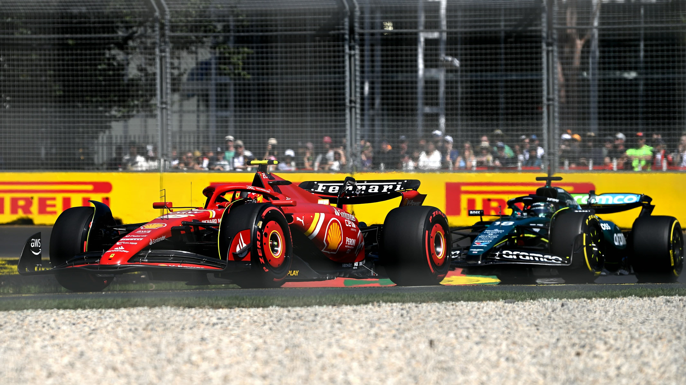

01Estructura
HTML5
Semántica, accesibilidad y bases sólidas.
↗Luis Giron / Desarrollador frontend
Desarrollo experiencias digitales claras, útiles y cuidadas hasta el último detalle.
↘01 / Sobre mí
Soy desarrollador frontend con formación práctica en HTML, CSS, JavaScript (ES6+) y Git/GitHub. También he creado y optimizado sitios con WordPress y Elementor. Mi experiencia en operaciones y atención al cliente me enseñó a coordinar tareas, mejorar procesos y resolver problemas con agilidad.
Un poco más de mí ↘Semántica, accesibilidad y bases sólidas.
↗Responsive, Grid, Flexbox y sistemas visuales.
↗Vanilla JS y comportamiento del DOM.
↗Control de versiones y publicación web.
↗02 / Trabajo seleccionado
Una selección de proyectos personales donde practico, experimento y sigo aprendiendo.
Una calculadora de running desarrollada como ejercicio durante mi etapa de aprendizaje en desarrollo web. Un proyecto práctico para aplicar los fundamentos de programación y convertirlos en una herramienta útil para corredores.

↗Una web centrada en el seguimiento de carreras, donde exploré la integración de múltiples APIs para mantener la información actualizada con cada competición. Más allá de la interfaz, el proyecto me permitió practicar la conexión entre distintas fuentes de datos y su actualización dentro de una misma aplicación.
Más proyectos en construcción
03 / ¿Hablamos?
Estoy abierto a nuevas oportunidades y colaboraciones. Si tienes una idea, conversemos.
lgironblanco@gmail.com ↗